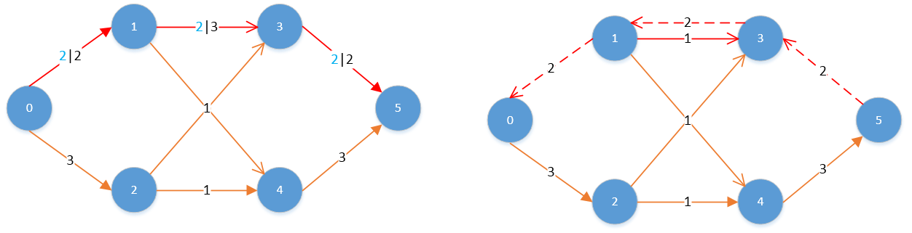
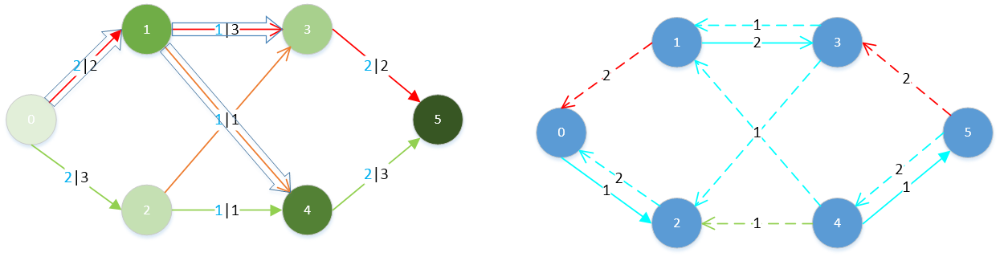

有一个自来水管道运输系统，起点是s，终点是t，途中经过的管道都有一个最大的容量。求从s到t的最大水流量是多少？
网络最大流问题是网络的另一个基本问题。许多系统包含了流量问题。例如交通系统有车流量，金融系统有现金流，控制系统有信息流等。许多流问题主要是确定这类系统网络所能承受的最大流量以及如何达到这个最大流量。
先介绍最大流问题额一般模型。
如图，要求从s到t的最大流是多少。我们可以很容易的看出该网络的最大流是4，s–>1 == 2 并且 s–>2 = 2. 线段上的数据表示线段上的最大容量，s表示起点，术语叫做源点(source),t是终点，术语叫做汇点(sink),边的容量记作$c$,实际边上流过的具体的值记作$f$. 最大流问题就是最大化从s出发的流量。
流网络的值
有时候，我们会提到流网络的大小，这个时候是指所有从源点出发的流之和。
Ford-Fulkerson
网络最大流问题比较常见的是Ford-Fulkerson解法。该方法依赖于三种重要思想：残留网络，增广路径和割。
增广路径
增广路径可以看做是从源点s到汇点t之间的一条路径，沿该路径可以压入更多的流，从而增加流的值。
举个例子来说明下，如图所示，每条红线就代表了一条增广路径，当前s到t的流量为3。
当然这并不是该网络的最大流，根据寻找增广路径的算法我们其实还可以继续寻找增广路径，最终的最大流网络如下图所示，最大流为4。
残留网络(Residual Graph)
给定一个具体的流，除了这个流之外，网络上还能容纳的流叫做这个流对应的残留网络。可以简单的把残留网络理解为整个网络减去当前的流网络。
残留网络的具体计算方法：
给定一个流网络G和一个流，流的残留网$G_f$拥有与原网相同的顶点。原流网络中每条边将对应残留网中一条或者两条边，对于原流网络中的任意边(u, v)，流量为f(u, v)，容量为c(u, v)：
- 如果f(u, v) > 0，则在残留网中包含一条容量为f(u, v)的边(v, u);
- 如果f(u, v) < c(u, v)，则在残留网中包含一条容量为c(u, v) - f(u, v)的边(u, v)。

如上图所示，开始的时候，所有的流都为0，此时满足第二条，f(u,v) = 0 < c(u,v).所以残留网络与原来的网络相同。

在当前的残留网络（与原网络相同）随意确定一条增广路径，假设是0-->1-->3-->5，该路径的最大流量是2.
f(0,1)>0, 残留网络中有一条边(1,0) = 2, f(0,1) = c(0,1), 所以没有从0到1的边。
c(1,3)>f(1,3)>0, 所以残留网络中有两条边,(1,3)=3-2=1, (3,1)=f(1,3)=2.
c(3,5) = f(3,5)>0, 所以残留网络中有一条边，(5,2) = 2.
整个残留网络的变化如有图所示。
再从残留网络中找一条增广路径，这次我们找0-->2-->4-->5,最大流量是1.
按照残留网络的规则，计算之后的残留网络如右图所示。

继续从残留网络中找增广路径，可以寻找到一条0-->2-->3-->1-->4-->5的路径，注意3-->1就是原来的1-->3减去1，最大的流量是1. 根据上面的规则调整残留网络，如右图所示。
此时，残留网络中再也找不到任何一条从0到5的增广路径，所以过程结束，这个时候，我们发现，我们已经找到了最大流。上图左边所示的就是该网络的最大流，和我们最初的直观印象是一样的。
割
设整个图的顶点集合是V。所谓图的割，指的是边的集合，指的是对于某个顶点集合$S \subseteq V$ ,从S出发指向S外部的那些边的集合，记为割(S,V\S).
所以割是指一些边的集合。
这些边上的容量之和被称为割的容量。
最小割问题
对于给定的网络，为了保证没有从s到t的路径，需要删去的边的总容量最小是多少。其中$s \in S$ 且 $t \in {V/S}$.
最大流最小割定理
一个网中所有流中的最大值等于所有割中的最小容量。
其实这个定理很容易从道理上想明白，一旦超出最小割，便总有边超出了边的容量，也就不存在可行的流了。
用上面用过的图来说明一下割的相关概念：
如图，流网络的一个割为s:{0,1,2},t:{3,4,5}, 通过割的流量定义为从s到t的所有流量之和(从t到s的流量记作负值)，所以这个割的流量是：2+1=3
割的容量记作所有从s到t的边的容量之和，所以是3+1+1+1 = 6.
从上面的定义可以简单的得到一点，任何一个割的流量都小于等于割的容量。
将上面的割的图形增加一个虚拟的节点s’，绘制成下面的形式：f1是流入S的流量，f2是从S到T的流量，f3是从T到S的流量。一个节点的流入流量等于流出的流量，所以有f2 = f1 + f3.

从这个图可以清晰的看出，流网络的值等于f1, 而割的流量等于f2-f3. 所以有流网络的值等于割的流量值。
最大流最小割定理定理的证明：http://www.cnblogs.com/luweiseu/archive/2012/07/14/2591573.html
Ford-Fulkerson算法的实现
上面介绍残留网络的时候已经将的很清楚了，Ford-Fulkerson算法就是不断更新残留网络，从中找出可行的流，直到无法从残留网络中找出可行的流为止。
所以，简单的算法步骤可以表述为：
- 初始化流flow = 0;
- while(condition){
flow += path-flow
}
此处的condition为 存在从s到t的增广路径，path-flow为该增广路径的值。- 输出flow.
可以看出，算法的主要部分在寻找增广路径上面。
参考文章：http://www.geeksforgeeks.org/ford-fulkerson-algorithm-for-maximum-flow-problem/
程序以这个实例作为输入：
1 | // C++ program for implementation of Ford Fulkerson algorithm |
以上代码搜索增广路径使用的BFS，实际上还可以使用DFS，PFS等方法，参考文章：
http://www.cnblogs.com/luweiseu/archive/2012/07/14/2591573.html
参考文献
http://www.cnblogs.com/luweiseu/archive/2012/07/14/2591573.html
http://www.acmerblog.com/ford-fulkerson-6135.html
http://blog.csdn.net/smartxxyx/article/details/9293805
http://www.geeksforgeeks.org/ford-fulkerson-algorithm-for-maximum-flow-problem/
Dinic算法
Dinic是一种比Ford-Fulkerson效率更高的算法，当数据较大的时候，可以考虑使用Dinic算法。
顶点的层次
在残留网络中，把顶点距离源点的距离定义为节点的层次，源点的层次为0，和源点直接相连的节点的层次是1.
分层： 将残留网络中所有节点的层次标记出来的过程。（注意不是所有的网络都可以分层）
层次网络：对残留网络进行分层后，删去比汇点Vt层次更高的顶点和与汇点Vt同层的顶点(保留Vt)，并删去这些顶点相关联的弧，再删去从某层顶点指向同层顶点和低层顶点的弧，所剩余的各条弧的容量与残留网络中的容量相同，这样得到的网络就是残留网络的子网络，称为层次网络，记为G’’(V’’,E’’)。
根据层次网络定义，层次网络中任意的一条弧<u,v>，有满足level(u)+1 == level(v)，这条弧也叫允许弧。直观的说，层次网络是建立在残留网络基础之上的一张“最短路径图”。从源点开始，在层次网络中沿着边不管怎么走，到达一个终点之后，经过的路径一定是终点在残留网络中的最短路径。
Dinic算法的思想
Dinic算法的思想也是分阶段地在层次网络中增广。它与最短增广路算法不同之处是：最短增广路每个阶段执行完一次BFS增广后，要重新启动BFS从源点Vs开始寻找另一条增广路;而在Dinic算法中，只需一次DFS过程就可以实现多次增广，这是Dinic算法的巧妙之处。Dinic算法具体步骤如下:
（1）初始化容量网络和网络流。
（2）构造残留网络和层次网络，若汇点不再层次网络中，则算法结束。
（3）在层次网络中用一次DFS过程进行增广，DFS执行完毕，该阶段的增广也执行完毕。
（4）转步骤（2）。
在Dinic的算法步骤中，只有第（3）步与最短增广路相同。在下面实例中，将会发现DFS过程将会使算法的效率有非常大的提高。
DFS增广过程示意：
Dinic算法实现
1 |
|
参考文献
https://comzyh.com/blog/archives/568/
http://blog.csdn.net/wall_f/article/details/8207595
http://www.cnblogs.com/y-clever/p/6308820.html
http://blog.csdn.net/u012914220/article/details/23865829
http://blog.csdn.net/pi9nc/article/details/23339111
http://www.nocow.cn/index.php/Dinic#.E7.AE.97.E6.B3.95.E6.B5.81.E7.A8.8B
2017ISAP 算法 ：http://www.renfei.org/blog/isap.html